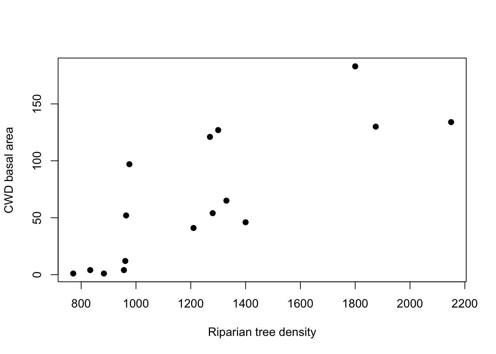
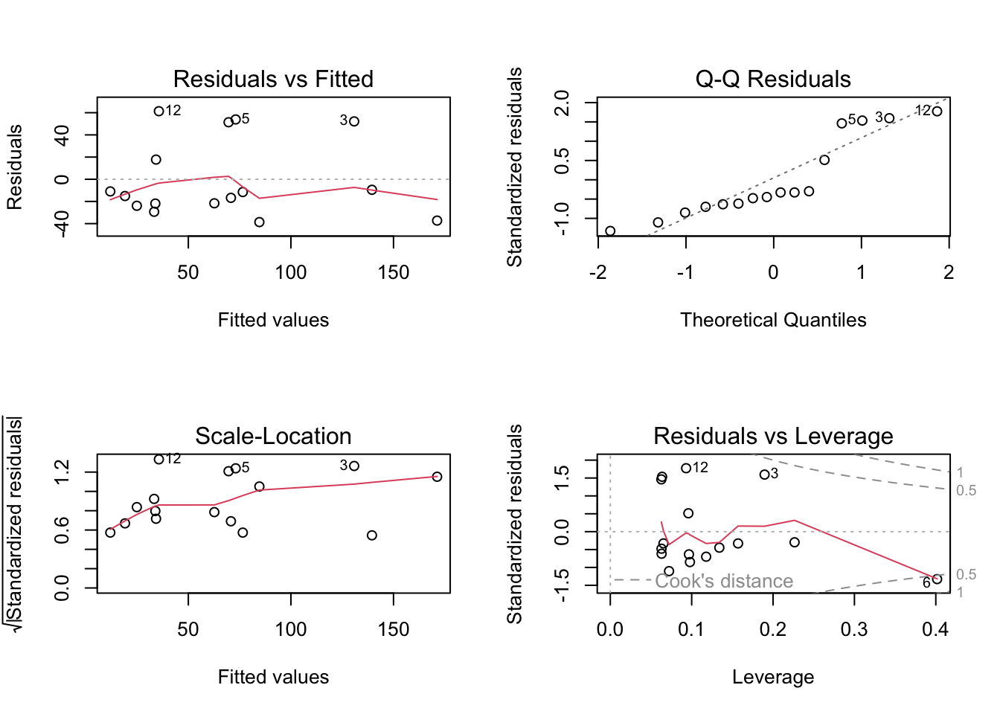
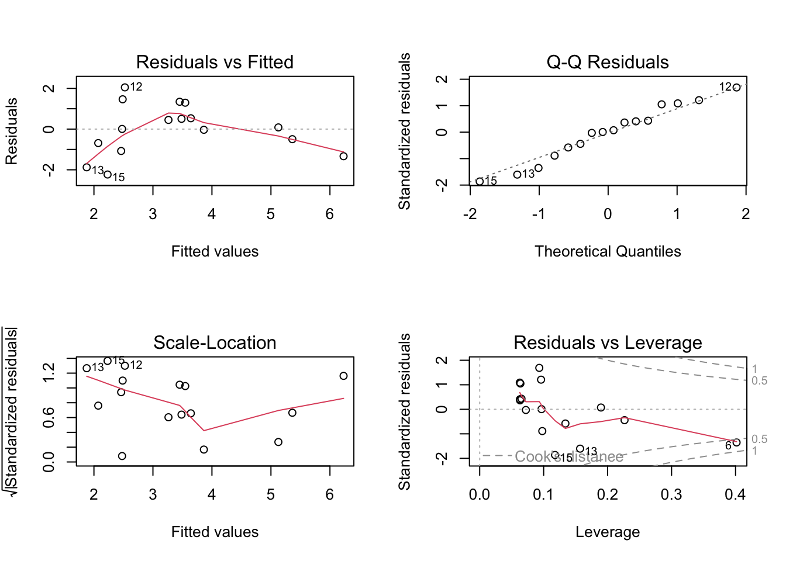
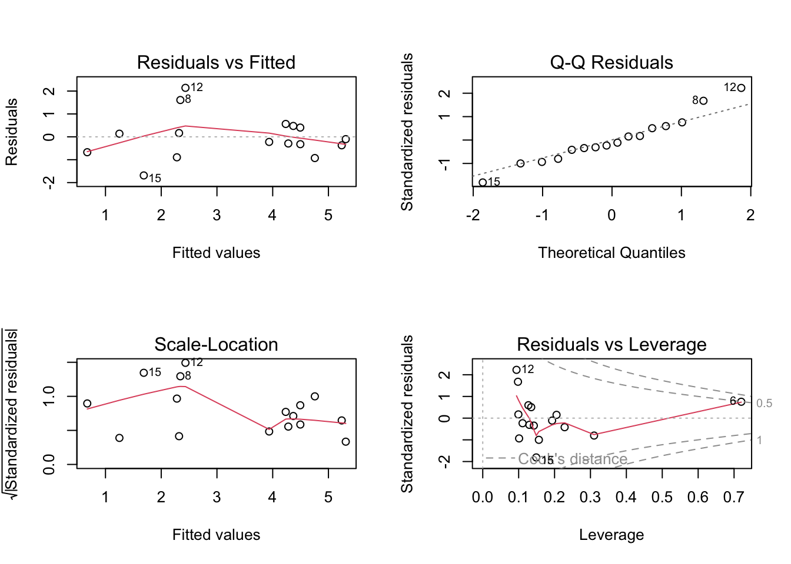
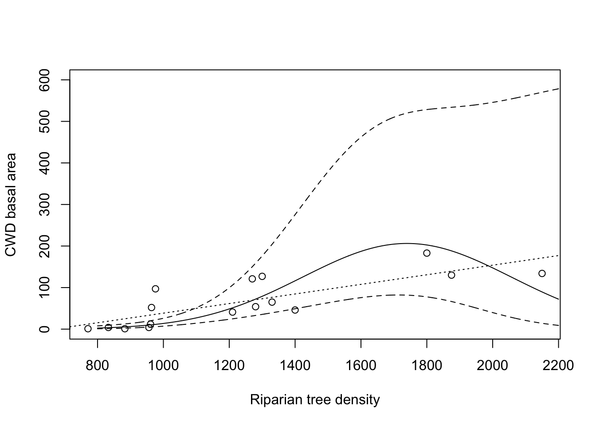

cwd <- read.csv("christ.csv")CWD Basal Area vs. Riparian Tree Density
Please refer to the lecture presentations and course notes for more information.
Data and exploratory plot
plot(CWD.BASA ~ RIP.DENS, data = cwd, pch = 19,
xlab = "Riparian tree density", ylab = "CWD basal area")
Simple linear regression
m <- lm(CWD.BASA ~ RIP.DENS, data = cwd)
summary(m)
Call:
lm(formula = CWD.BASA ~ RIP.DENS, data = cwd)
Residuals:
Min 1Q Median 3Q Max
-38.62 -22.41 -13.33 26.16 61.35
Coefficients:
Estimate Std. Error t value Pr(>|t|)
(Intercept) -77.09908 30.60801 -2.519 0.024552 *
RIP.DENS 0.11552 0.02343 4.930 0.000222 ***
---
Signif. codes: 0 '***' 0.001 '**' 0.01 '*' 0.05 '.' 0.1 ' ' 1
Residual standard error: 36.32 on 14 degrees of freedom
Multiple R-squared: 0.6345, Adjusted R-squared: 0.6084
F-statistic: 24.3 on 1 and 14 DF, p-value: 0.0002216par(mfrow = c(2, 2))
plot(m)
Log-transformed outcome
m_log <- lm(log(CWD.BASA) ~ RIP.DENS, data = cwd)
summary(m_log)
Call:
lm(formula = log(CWD.BASA) ~ RIP.DENS, data = cwd)
Residuals:
Min 1Q Median 3Q Max
-2.23086 -0.78379 0.04559 0.72335 2.05022
Coefficients:
Estimate Std. Error t value Pr(>|t|)
(Intercept) -0.5570100 1.0739690 -0.519 0.6121
RIP.DENS 0.0031573 0.0008222 3.840 0.0018 **
---
Signif. codes: 0 '***' 0.001 '**' 0.01 '*' 0.05 '.' 0.1 ' ' 1
Residual standard error: 1.274 on 14 degrees of freedom
Multiple R-squared: 0.513, Adjusted R-squared: 0.4782
F-statistic: 14.75 on 1 and 14 DF, p-value: 0.001802par(mfrow = c(2, 2))
plot(m_log)
Higher-order regression
m_quad <- lm(log(CWD.BASA) ~ RIP.DENS + I(RIP.DENS^2),
data = cwd)
summary(m_quad)
Call:
lm(formula = log(CWD.BASA) ~ RIP.DENS + I(RIP.DENS^2), data = cwd)
Residuals:
Min 1Q Median 3Q Max
-1.6872 -0.4462 -0.1621 0.4214 2.1399
Coefficients:
Estimate Std. Error t value Pr(>|t|)
(Intercept) -9.686e+00 3.114e+00 -3.110 0.00828 **
RIP.DENS 1.726e-02 4.673e-03 3.693 0.00270 **
I(RIP.DENS^2) -4.960e-06 1.628e-06 -3.047 0.00935 **
---
Signif. codes: 0 '***' 0.001 '**' 0.01 '*' 0.05 '.' 0.1 ' ' 1
Residual standard error: 1.01 on 13 degrees of freedom
Multiple R-squared: 0.7159, Adjusted R-squared: 0.6722
F-statistic: 16.38 on 2 and 13 DF, p-value: 0.0002801par(mfrow = c(2, 2))
plot(m_quad)
m_cubic <- lm(log(CWD.BASA) ~ RIP.DENS + I(RIP.DENS^2)
+ I(RIP.DENS^3),
data = cwd)
summary(m_cubic)
Call:
lm(formula = log(CWD.BASA) ~ RIP.DENS + I(RIP.DENS^2) + I(RIP.DENS^3),
data = cwd)
Residuals:
Min 1Q Median 3Q Max
-1.66737 -0.42734 -0.08318 0.38955 1.93000
Coefficients:
Estimate Std. Error t value Pr(>|t|)
(Intercept) -2.444e+01 1.186e+01 -2.060 0.0617 .
RIP.DENS 5.198e-02 2.737e-02 1.900 0.0818 .
I(RIP.DENS^2) -3.068e-05 2.005e-05 -1.530 0.1519
I(RIP.DENS^3) 5.995e-09 4.659e-09 1.287 0.2224
---
Signif. codes: 0 '***' 0.001 '**' 0.01 '*' 0.05 '.' 0.1 ' ' 1
Residual standard error: 0.9854 on 12 degrees of freedom
Multiple R-squared: 0.7504, Adjusted R-squared: 0.688
F-statistic: 12.02 on 3 and 12 DF, p-value: 0.000629Note that the cubic term (\(\mathrm{RIP.DENS}^3\)) is not significant, so we don’t include it (or any higher-order terms) in the model.
Predictions and confidence intervals
p <- predict(m_quad,
newdata = data.frame(RIP.DENS = c(1000, 1500)),
interval = "confidence")
p fit lwr upr
1 2.613829 1.966541 3.261118
2 5.043534 4.149293 5.937775exp(p) fit lwr upr
1 13.65123 7.145917 26.07867
2 155.01687 63.389137 379.09068p <- predict(m_quad,
newdata = data.frame(RIP.DENS=800:2200),
interval = "confidence")
plot(CWD.BASA ~ RIP.DENS,
data = cwd,
xlab = "Riparian tree density",
ylab = "CWD basal area",
ylim = c(0, 600))
abline(m, lty=3)
lines(800:2200, exp(p[,1]))
lines(800:2200, exp(p[,2]), lty=2)
lines(800:2200, exp(p[,3]), lty=2)
confint(m_quad) 2.5 % 97.5 %
(Intercept) -1.641402e+01 -2.958261e+00
RIP.DENS 7.163966e-03 2.735672e-02
I(RIP.DENS^2) -8.476813e-06 -1.443936e-06